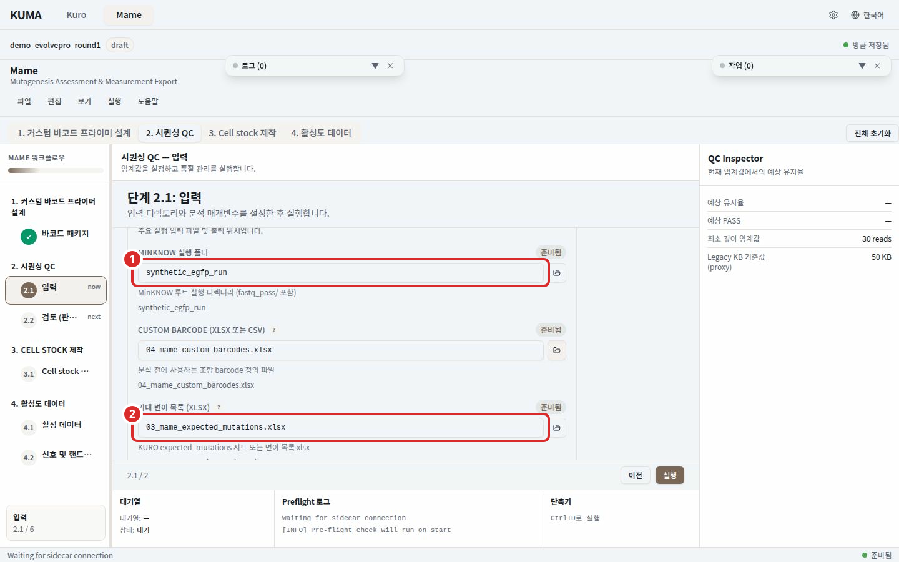

단계 2. 분석 및 검토¶

번호 표시: 1 판정표; 2 96-well 플레이트 맵
시퀀싱 결과를 웰마다 판정하고 96-well 플레이트 위에서 확인한다. 2.1 에서 입력을 고르고 2.2 에서 판정을 읽는다.
2.1 입력¶
| 입력 | 필수 |
|---|---|
| MinKNOW 실행 폴더 | 필수 |
| 기대 변이 목록 (xlsx) | 필수 |
| 참조 construct | 필수 |
| 사용할 웰 | 선택. 손대지 않으면 앞쪽 웰을 쓴다 |
입력을 고른 뒤 실행 또는 유효성 검사 를 누른다. Janus 장비 설정은 이 화면에 없고 step 3 에서 다룬다.
사용할 웰¶
"사용할 웰" 패널은 계산된 배치를 플레이트 위에 그린다. 각 변이는 플레이트 순서(A1, B1, ... H1, A2)가 정해준 웰에 고정되며 웰을 눌러도 자리가 움직이지 않는다. 선택은 이 캠페인이 실제로 채운 웰이 어디인지만 말한다.
선택하지 않은 웰은 캠페인이 채우지 않은 웰이므로 판정하지 않는다. 그 웰에 배치돼 있던 샘플은 2.2 에서 이름으로 표시된다. 샘플 수보다 적게 고르는 것은 부분 충전 플레이트일 뿐 거부 사유가 아니다. 거부되는 유일한 선택은 아무 웰도 고르지 않은 빈 선택이다.
같은 패널의 바코드 작업목록 (csv) 버튼은 채운 웰마다 웰, 샘플, 바코드 토큰, 시드 프라이머 이름을 한 행씩 적은 파일을 저장한다. 벤치에서 분주할 때 쓴다.
입력을 바꾸면 이전 결과가 지워진다¶
실행 폴더, 기대 변이 목록, 참조 construct, 선택한 웰, 분석 파라미터 중 하나라도 바꾸면 이전 실행이 만든 판정과 플레이트 맵이 사라지고 2.2 는 실행 전 상태로 돌아간다. 끝난 실행의 화면이 새 입력의 결과처럼 보이는 것을 막는 동작이다. 같은 값을 다시 고르면 아무 일도 일어나지 않는다. 출력 경로는 입력이 아니므로 결과를 지우지 않는다.
2.2 판정 검토¶
왼쪽에 판정표, 오른쪽에 96-well 플레이트 맵과 플레이트별 판정 막대 그래프가 있다. 판정표 위의 탭은 Final, ALL, 그리고 이번 실행에 실제로 있는 native barcode 다. Final 은 변이마다 선정된 replicate 의 웰만 남긴다.
판정표 위에 뜨는 안내¶
문제가 없으면 아무것도 뜨지 않는다.
- 이 런은 판정할 수 없다 웰당 read 중앙값이 하한에 못 미친다. 아래 판정은 읽을 깊이가 없던 플레이트의 산물이므로 그대로 쓰지 말고 시퀀싱을 다시 한다.
- 판정은 가능하지만 깊이가 부족한 런이다 하한은 넘고 권장치에 못 미친다. 판정을 쓰되 경계에 있는 웰은 따로 확인한다. 깊이는 이번 런이 실제로 판정한 웰에서만 잰다.
- 레퍼런스 끝에 있는 변이 기대 변이의 코돈이 레퍼런스 끝 가까이 있으면 그 변이 이름을 적어 준다. 정렬기가 그 자리에서 read 를 잘라내므로 웰이 보고하는 깊이보다 얕게 읽힐 수 있다. 프라이머가 붙는 구간까지 포함한 레퍼런스로 다시 실행한다.
- 샘플 N개는 이번 플레이트에 없다 선택에서 빠진 웰에 배치돼 있던 샘플의 이름과 웰을 알려 준다. 이번 런에 판정이 없는 것이 정상이며 그 샘플이 필요하면 다음 런에 넣는다.
- well-변이 대응 오류 의심 웰마다 관측 변이가 자기 기대 변이보다 다른 웰의 기대 변이와 더 잘 맞는 상태다. 실행을 막지는 않으니 결과를 쓰기 전에 플레이트 분주와 샘플 이름의 대응을 확인한다. 관측 변이가 있는 웰이 24개 미만이면 표본이 작아 판정하지 않는다.
같은 자리에 플로우셀 id 와 공극 수도 나온다. 참고용이며 합격선으로 쓰지 않는다.
판정 근거 열기¶
- 복제본 행: 판정 상세의 replicate 목록은 버튼이다. 행을 누르면 그 플레이트 복제본이 선택되고 상세, 플레이트 강조, 판정표가 함께 따라 움직인다.
- confidence 지표: 지표 이름을 누르면 무엇을 센 값인지, 파이프라인 어느 단계에서 센 값인지, 판정을 움직이는 값인지가 나온다. 이번 실행이 대조한 임계값도 함께 적는다. 열 개 지표 중 일곱 개는 진단용이라 판정을 바꾸지 않는다.
- 판정 범례: 플레이트 맵 범례와 판정 막대 그래프에서 클래스에 hover 하면 그 클래스의 뜻이 나온다. 웰이 하나도 없는 클래스도 마찬가지다.
판정 클래스¶
| 판정 | 의미 |
|---|---|
| Pass | 관측된 아미노산 변화가 설계와 정확히 일치한다 |
| Ambiguous | 기대 변이는 모두 일치한다. 여기에 기대 위치의 indel window 안에서 아미노산 변화가 하나 더 관측됐거나 read 의 indel 이벤트 신호가 임계값 이상이다(WT 대조군에도 붙을 수 있다). 검출로 계산한다 |
| Mixed | well 내 오염이다. consensus 신호에 두 번째 대립유전자가 상당량 섞여 있다 |
| Wrong AA | 기대 위치의 아미노산이 다르거나, 기대한 변이가 없거나, window 밖에 예상치 못한 변화가 있다 |
| Frameshift | consensus 의 순 삽입 또는 결실 길이가 3 의 배수가 아니어서 reading frame 이 어긋났다 |
| Many | 관측된 아미노산 변화 수가 설계 개수와 다중 변이 상한을 모두 넘었다 |
| Low depth | 이 well 을 신뢰성 있게 판정하기에는 read 가 너무 적다 |
| No call | consensus 에 모호한 (N) 위치가 너무 많아 아미노산 판정을 신뢰할 수 없다 |
→ 단계 3. Janus 장비 설정 은 선택 단계다. 시퀀싱 판정만 필요하면 여기서 멈춰도 된다.
→ 단계 4. 활성 데이터 에서 활성 측정값을 이 판정으로 걸러 EVOLVEpro 입력을 만든다.